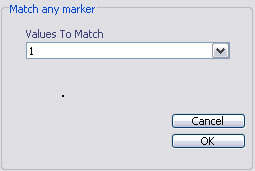
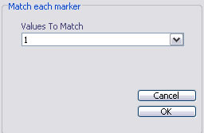

Event Filters
Email: sigtool@kcl.ac.uk
Author: Malcolm Lidierth
Updated: November 2007
Method
Event Filters are activated from the Channels->Event Filter menu.
When Event Filters are active, only timestamps or data epochs that satisfy the specified filter conditions should be processed by the sigTOOL analysis functions.

Each sigTOOL channel has an independent Event Filter.
The preset Event Filtering methods available from the sigTOOL GUI allow events and data epochs to be selected on the basis of:
- the number of the epoch or timestamp (e.g. whether it is odd or even)
- the values stored in the marker field of each sigTOOL data channel.
The following standard functions are defined that do not require any
marker data in the channel
- 'Off' selects all events/epochs in the channel (default)
- 'Cursors' selects those events/epochs that fall between pairs of cursors in the parent data view. A pair of cursors has one odd-numbered cursor (number n) and an even numbered cursor (n+1), e.g. 1+2, 3+4 etc. Missing or incomplete pairs will be ignored. For episodic waveforms, the entire epoch must be contained within the cursor pair.
- 'Odd Epochs' selects odd numbered epochs, false otherwise
- 'Even Epochs' selects even numbered epochs, false otherwise
- 'Every Nth Epoch' selects every Nth epoch starting at that specified in the subsequent menu:

The following require a simple numeric matrix in the channel marker field
- 'Match Any' selects those events/epochs where any marker value matches
any of the values specified in a template supplied in a subsequent menu

- 'Match All' selects those events/epochs where there is an exact match between each element in each row of marker data, and the corresponding element in the supplied template

Custom filters
If you select 'Custom' from the menu you will be prompted to select a
custom defined m-file. These files can be used to provide more complex filtering e.g. based on metadata stored in the channel marker field. See the Programmer's Guide for further details
© The Author and King's College London, 2007-